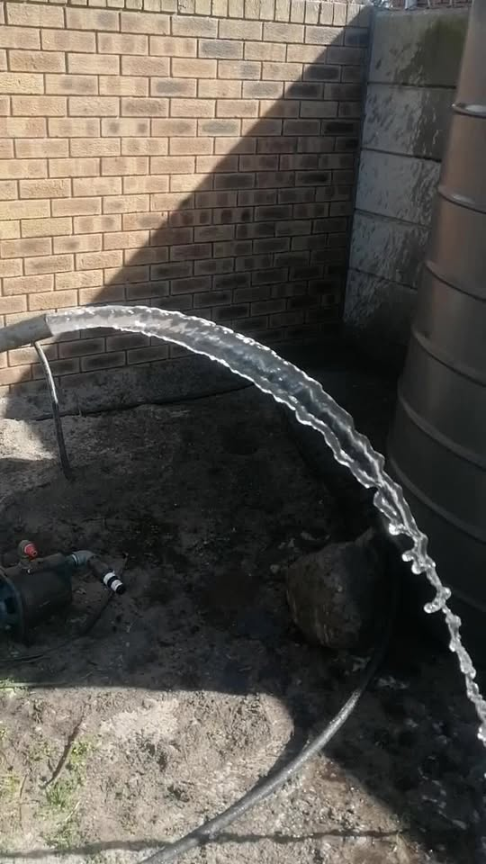

Short answer: a wellpoint is cheaper and fine for garden water on sandy ground. A borehole costs more but gives a deeper, steadier supply. Here's how to choose.

| Wellpoint | Borehole | |
|---|---|---|
| Depth | Shallow, into the sand | Deeper, drilled into rock |
| Cost | Lower | Higher (depth, casing, pump) |
| Water supply | Depends on the shallow water table; can drop in summer | Steadier, less affected by dry spells |
| Best for | Garden, irrigation, pool top-ups | Larger gardens, bigger needs, household use with filtration |
| Ground | Sandy areas with a shallow water table | Most areas, including where a wellpoint runs dry |
| Drinking | Only after testing + treatment | Only after testing + treatment |
If you live on sandy ground with a shallow water table, which covers much of the Cape Flats and parts of the Southern Suburbs, and you mainly want to water the garden, a wellpoint usually does the job for less money.
Choose a borehole if your neighbours' wellpoints run dry in summer, if you want more water than a wellpoint can give, or if you plan to filter the water for use in the house.
The City of Cape Town requires boreholes and wellpoints to be registered, and the City's sign must be displayed where the water is used outdoors. Register once the system is in.
A wellpoint. It's shallow and quick to install. A borehole costs more because it's drilled deeper, into rock, and needs casing.
Usually a borehole. It draws from deeper water that's less affected by dry summers. A wellpoint depends on the shallow water table, which drops in summer.
Only after testing it and fitting the right filtration. Untreated water is for the garden, irrigation and toilets.
You need to register boreholes and wellpoints with the City of Cape Town, and display the City's sign when the water is used outdoors.
Send us a WhatsApp with a photo of your yard. We'll tell you if a borehole or wellpoint fits, and what it costs.